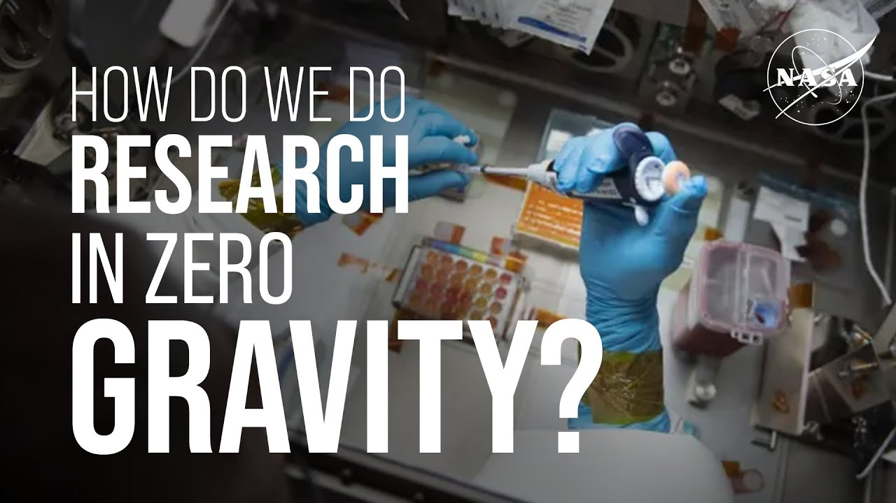

【NASA精选：如何在零重力的太空环境下做研究？| 附文稿】
Summary: Research in microgravity presents unique challenges, requiring specialized methods and equipment to overcome issues like floating objects, bubbles in liquids, convection absence, and adapting Earth-based instruments.
摘要： 在微重力环境下进行研究面临独特挑战，需要特殊方法和设备来解决物体漂浮、液体气泡、对流缺失以及调整地球仪器等问题。

⏱️ Estimated Reading Time: 4 min
📚 六级生词 📚 雅思生词 📚 托福生词 📚 专八生词 📚 SAT生词 📚 考研生词 📚 GRE生词 📚 高考生词
How do we do research in zero gravity?
我们如何在零重力环境下做研究？
We Asked a NASA Scientist.
我们请教了NASA科学家。
Actually when astronauts do experiments on the International Space Station, for instance, to look at the effect of the space environment on organisms, that environment is actually technically called microgravity.
实际上，当宇航员在国际空间站上进行实验时，例如研究太空环境对生物的影响，这种环境在技术上被称为微重力。
That is, things feel weightless, but we're still under the influence of Earth's gravity.
也就是说，物体感觉失重，但我们仍受地球引力的影响。
Now, the very microgravity that we're trying to study up there can make experiments actually really kind of difficult for a bunch of different reasons.
然而，我们试图研究的微重力环境实际上会让实验变得相当困难，原因有很多。
First of all, stuff floats.
首先，物体会漂浮。
So losing things in the ISS is a very real possibility.
因此，在国际空间站上丢失物品是非常可能发生的。
For example, there was a set of tomatoes that was harvested in 2022 put it in a bag and it floated away and we couldn't find it for eight months.
例如，2022年收获的一批西红柿被放进袋子里后漂浮走了，我们花了八个月才找到。
So to prevent this kind of thing from happening, we use a lot of different methods, such as using enclosed experiment spaces like glove boxes and glove bags.
为了防止这种情况发生，我们使用了许多不同的方法，比如使用封闭的实验空间，如手套箱和手套袋。
We use a lot of Velcro to stick stuff to.
我们使用大量魔术贴来固定物品。
Another issue is bubbles in liquids.
另一个问题是液体中的气泡。
So, on Earth, bubbles float up, in space they don't float up, they'll interfere with optical measurements or stop up your microfluidics.
在地球上，气泡会上浮，但在太空中它们不会上浮，会干扰光学测量或堵塞微流体设备。
So space experiment equipment often includes contraptions for stopping or blocking or trapping bubbles.
因此，太空实验设备通常包括阻止、阻挡或捕获气泡的装置。
A third issue is convection.
第三个问题是对流。
So on Earth, gravity drives a process of gas mixing called convection and that helps circulate air.
在地球上，重力驱动一种称为对流的气体混合过程，有助于空气循环。
But without that in microgravity we worry about some of our experimental organisms and whether they're going to get the fresh air that they need.
但在微重力环境下，没有对流，我们担心一些实验生物是否能获得所需的新鲜空气。
So we might do things like adding a fan to their habitat, or if we can't, we'll take their habitat and put it somewhere where there might already be a fan on the ISS or in a corridor where we think there are going to be a lot of astronauts moving around and circulating the air.
因此，我们可能会在它们的栖息地添加风扇，如果不行，就把栖息地放在国际空间站上已有风扇的地方，或放在宇航员频繁活动、空气流通的走廊里。
Yet another issue is the fact that a lot of the laboratory instruments we use on Earth are not designed for microgravity.
还有一个问题是，许多在地球上使用的实验室仪器并非为微重力环境设计。
So to ensure that gravity doesn't play a factor in how they work, we might do experiments on the ground where we turn them on their side or upside down, or rotate them on a rotisserie to make sure that they keep working.
为了确保重力不影响其工作方式，我们可能在地面进行实验，将它们侧放或倒置，或在旋转架上旋转，以确保它们正常工作。
So, as you can tell, for every experiment that we do there's a whole team of scientists on the ground that has spent years developing the experiment design.
因此，正如你所见，我们进行的每一项实验背后都有一个地面科学家团队，他们花费多年时间设计实验方案。
And so I guess the answer to how we do research in microgravity is with a lot of practice and preparation.
所以，我认为在微重力环境下进行研究的答案就是大量的实践和准备。
NASA.
NASA。
A NASA 360 Production.
NASA 360制作。